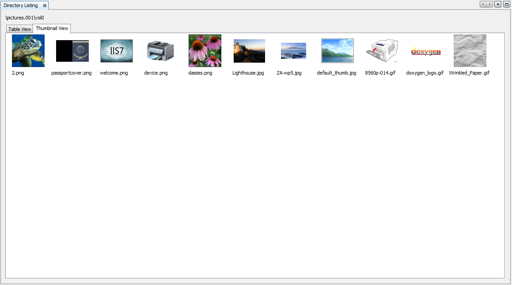

Thumbnail Results Viewer displays the data catalog as a table of thumbnail images in adjustable sizes. This viewer only supports picture file(s) (Currently, only supports JPG, GIF, and PNG formats). Click the Thumbnail tab to select this view. Note that for a large number of images in a directory selected in the Data Explorer, or for a View selected that contains a large number of images, it might take a while to populate this view for the first time before the images are cached.
Below is an example of "Thumbnail Results Viewer" window:
